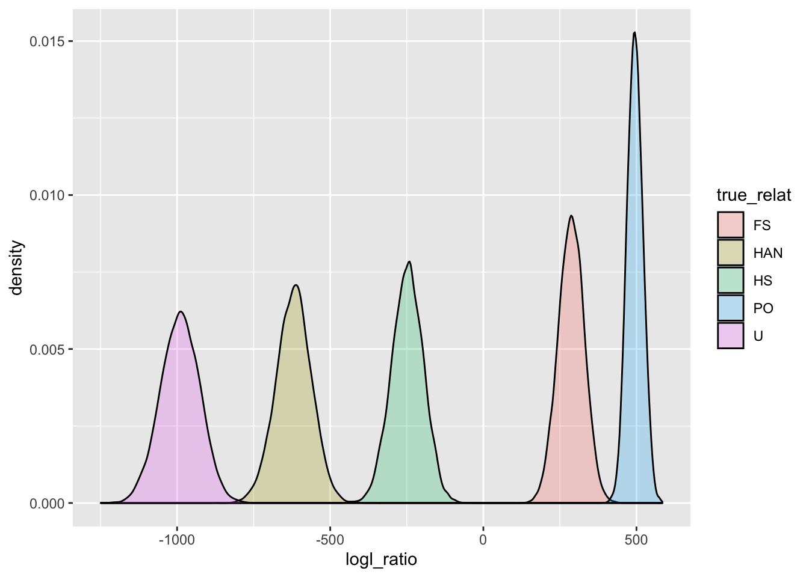
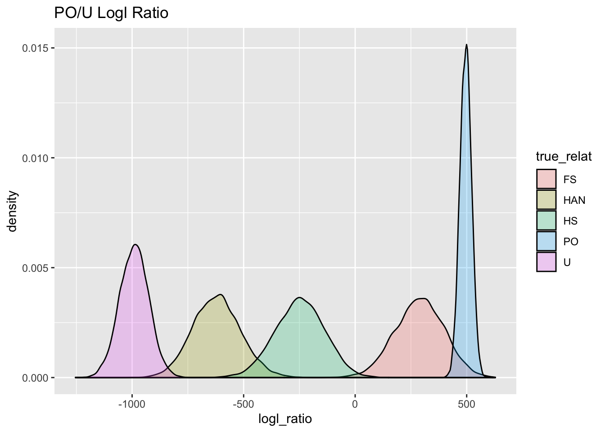
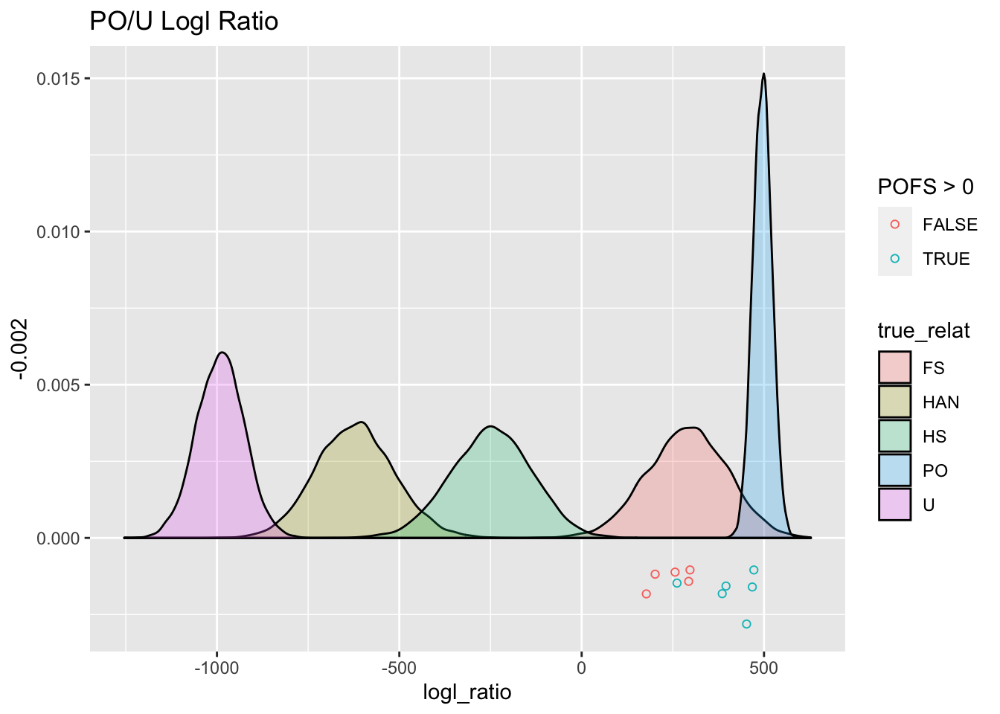

Session 2 Kin-finding lab
In this session, we are going to get our hands dirty with a lovely data set of genetic data from 1,484 bearded seals and use those data to find kin pairs from amongst the \({1,484 \choose 2} = 1,100,386\) pairs that can be formed from all those samples.
This data set includes 2,569 genetic markers. These markers were filtered down for quality and reliability from a much larger set. We won’t talk about that process, here, but keep in mind that a huge part of a successful CKMR project involves getting and curating a quality set of genetic markers.
We will first estimate how much power we expect to have for identifying kin pairs with this marker set, and then we will actually do the kin-finding. Both of these steps will be done using the R package ‘CKMRsim’ that Eric wrote. It is available from GitHub at https://github.com/eriqande/CKMRsim and its online documentation can be read at: https://eriqande.github.io/CKMRsim/.
If you want to use ‘CKMRsim’ yourself in a different project, you would need to install it like this:
remotes::install_github("eriqande/CKMRsim")However, we have already included it in the tws-ckmr-2022 project using
‘renv’, so you don’t have to install it now.
Before proceeding, we will load all of the libraries that we will be using
for this session. Additionally, we will download and install the
binary of the mendel program so that we can simulate genetic markers with
physical linkage.
library(tidyverse)
library(CKMRsim)
# the next step tests to see if mendel was already installed.
# if not, it installs it
if(system.file("bin", package = "CKMRsim") == "") {
install_mendel(Dir = system.file(package = "CKMRsim"))
}2.1 Looking at the genetic data and pivoting it
We load the genetic data from an RDS file:
beardo_genos <- read_rds("data/beardo-genos.rds")Here are the first 10 rows and 9 columns of that data set:
beardo_genos[1:10, 1:9]## # A tibble: 10 × 9
## Our_sample L252.1 L252.2 L253.1 L253.2 L472.1 L472.2
## <chr> <chr> <chr> <chr> <chr> <chr> <chr>
## 1 2010BS40 B B A O A B
## 2 EB20GAM002 A A A O A B
## 3 EB16GAM070 A A B B B B
## 4 SH-G18-04 A A A A B B
## 5 SH-S04-05 A B A A A A
## 6 09BS8 B B A B A A
## 7 EB17GAM073 A A A A A B
## 8 EB13GAM022 A A B O A B
## 9 EB17GAM059 A A A A B O
## 10 EB05NOM003 A A A B A B
## # … with 2 more variables: L567.1 <chr>, L567.2 <chr>
## # ℹ Use `colnames()` to see all variable namesThe full data set has 1484 rows and 5139 columns.
This is a standard genotype format. The first column gives the sample name and every subsequent pair of columns gives the alleles found in the sample at a genetic marker or “locus”.
These markers are single nucleotide polymorphism (SNP) markers. These markers
are typically biallelic, and in this data set, the two alleles are named
A and B. Some of these markers have a third allele that is a null allele.
The null allele does not appear in any reads from the sequencing machine (it is
associated with variation that interferes with the enzyme cut-site used to prepare
the DNA libraries). Typically these null alleles are a big problem; however, this
data set is based on high enough read depth, that the presence of a null allele can
be ascertained in both homozygous and heterozygous form, so they can be used as
a third allele at markers where they exist. These null alleles are denoted by
O in this dataset. There are no missing genotypes in the data.
In order to manipulate these data more easily and prepare them for CKMRsim we will pivot them into a longer format.
long_genos <- beardo_genos %>%
rename(Indiv = Our_sample) %>%
pivot_longer(
cols = -Indiv,
names_to = c("Locus", "gene_copy"),
names_sep = "\\.",
values_to = "Allele"
)This looks like:
long_genos## # A tibble: 7,624,792 × 4
## Indiv Locus gene_copy Allele
## <chr> <chr> <chr> <chr>
## 1 2010BS40 L252 1 B
## 2 2010BS40 L252 2 B
## 3 2010BS40 L253 1 A
## 4 2010BS40 L253 2 O
## 5 2010BS40 L472 1 A
## 6 2010BS40 L472 2 B
## 7 2010BS40 L567 1 A
## 8 2010BS40 L567 2 A
## 9 2010BS40 L1007 1 A
## 10 2010BS40 L1007 2 B
## # … with 7,624,782 more rows
## # ℹ Use `print(n = ...)` to see more rows2.2 Kin finding power analysis assuming no physical linkage
To assess the power of a set of markers for kin finding, CKMRsim requires the allele freqencies in a particular format. These steps calculate the allele frequencies and format them as required:
locus_names <- unique(long_genos$Locus)
afreqs_ready <- long_genos %>%
count(Locus, Allele) %>%
group_by(Locus) %>%
mutate(
Freq = n / sum(n),
Chrom = "Unk",
Pos = as.integer(factor(Locus, levels = locus_names))
) %>%
ungroup() %>%
select(Chrom, Pos, Locus, Allele, Freq) %>%
arrange(Pos, desc(Freq)) %>%
mutate(AlleIdx = NA,
LocIdx = NA) %>%
filter(!is.na(Allele)) %>%
reindex_markers()The allele frequencies look like this:
afreqs_ready## # A tibble: 7,423 × 7
## Chrom Pos Locus Allele LocIdx AlleIdx Freq
## <chr> <int> <chr> <chr> <int> <int> <dbl>
## 1 Unk 1 L252 A 1 1 0.724
## 2 Unk 1 L252 B 1 2 0.268
## 3 Unk 1 L252 O 1 3 0.00876
## 4 Unk 2 L253 A 2 1 0.739
## 5 Unk 2 L253 B 2 2 0.196
## 6 Unk 2 L253 O 2 3 0.0654
## 7 Unk 3 L472 A 3 1 0.570
## 8 Unk 3 L472 B 3 2 0.422
## 9 Unk 3 L472 O 3 3 0.00741
## 10 Unk 4 L567 A 4 1 0.860
## # … with 7,413 more rows
## # ℹ Use `print(n = ...)` to see more rowsThese allele frequencies then get compiled into an R object that includes the results of a number of calculations that account for genotyping error and a number of matrices that allow rapid simulation of kin pairs from the data.
This takes a little while because it is a fairly large data set. But not more than a minute on my laptop.
ckmr <- create_ckmr(
D = afreqs_ready,
kappa_matrix = kappas[c("PO", "FS", "HS", "HAN", "U"), ],
ge_mod_assumed = ge_model_TGIE,
ge_mod_true = ge_model_TGIE,
ge_mod_assumed_pars_list = list(epsilon = 0.005),
ge_mod_true_pars_list = list(epsilon = 0.005)
)The kappa_matrix specifies the identify coefficients (the \(\kappa\)’s) for
the different relationships we want. The remaining options tell it to
use a fairly generic model for genotyping error with an error rate (epsilon) at
which we expect about 1% of the genotypes to have a genotyping error.
The variable kappas is a piece
of package data that looks like this:
kappas## kappa0 kappa1 kappa2
## MZ 0.0000 0.00000 1.00000
## PO 0.0000 1.00000 0.00000
## FS 0.2500 0.50000 0.25000
## HS 0.5000 0.50000 0.00000
## GP 0.5000 0.50000 0.00000
## AN 0.5000 0.50000 0.00000
## DFC 0.5625 0.37500 0.06250
## HAN 0.7500 0.25000 0.00000
## FC 0.7500 0.25000 0.00000
## HFC 0.8750 0.12500 0.00000
## DHFC 0.7656 0.21875 0.01562
## SC 0.9375 0.06250 0.00000
## HSC 0.9688 0.03125 0.00000
## U 1.0000 0.00000 0.00000So, the line
kappas[c("PO", "FS", "HS", "HAN", "U"), ]is merely picking out the rows from that matrix that we want to focus on: we want to be prepared to do calculations concerning the relationships of:
U: unrelatedHAN: half aunt-niece (which includes half uncle-niece and half uncle-nephew, etc.)HS: half siblingFS: full siblingPO: parent-offspring
Now we can simulate some log likelihood ratios and plot them to see how they look.
# This simulates a large number of pairwise genotype probabilites
# at each locus
Qs <- simulate_Qij(
ckmr,
calc_relats = c("PO", "FS", "HS", "HAN", "U"),
sim_relats = c("PO", "FS", "HS", "HAN", "U")
)
# In the following, we extract those genotype probabilities in different
# ways to calculate a variety of different log-likelihood ratios
# for different relationships.
# in this particular case, we are looking at log likelihood ratios
# for the hypothesis of Parent-Offspring vs Unrelated
PO_U_logls <- extract_logls(
Qs,
numer = c(PO = 1),
denom = c(U = 1)
)
# And we can plot the distribution of those logl ratios for each
# of the different true relationships.
ggplot(
PO_U_logls,
aes(x = logl_ratio, fill = true_relat)
) +
geom_density(alpha = 0.25)
Clearly, PO and U should be easily resolved. And it turns out that physical linkage does not affect the distribution of log-likelihood ratios when the true relationship is either U or PO (so long as the markers are not in linkage disequilibrium).
And we can use importance sampling to estimate false positive rates.
mc_sample_simple(
Qs,
nu = "PO"
)## # A tibble: 5 × 10
## FNR FPR se num_non…¹ Lambd…² pstar mc_me…³
## <dbl> <dbl> <dbl> <int> <dbl> <chr> <chr>
## 1 0.01 6.30e-193 0 9900 436. PO IS
## 2 0.05 5.96e-200 0 9500 453. PO IS
## 3 0.1 1.00e-203 0 9000 463. PO IS
## 4 0.2 2.41e-208 0 8000 474. PO IS
## 5 0.3 8.47e-212 0 7000 482. PO IS
## # … with 3 more variables: numerator <chr>,
## # denominator <chr>, true_relat <chr>, and
## # abbreviated variable names ¹num_nonzero_wts,
## # ²Lambda_star, ³mc_method
## # ℹ Use `colnames()` to see all variable namesThe FPR gives that probability of falsely declaring an unrelated pair a parent-offspring pair, for a few different values of the false negative rate. Clearly, there is no chance, whatsoever, of an unrelated pair being mistaken as a PO pair.
For all other relationship types, the fact of physical linkage is important. In particular, physical linkage really becomes important when we start to consider kin pairs that are less related than half-siblings, but not a lot less, for example, the HAN, or “half-aunt-niece” category.
2.3 Power for kin-finding while accounting for physical linkage
With CKMRsim, we can simulate likelihood ratios (which are calculated without reference to the physical linkage) under the influence of physical linkage, BUT In order to do that formally, we need to know where in the genome all these markers are. We don’t know that, in this case, but we can still get a very good sense for the effect of linkage by imagining that all these markers are spread throughout an appropriately sized genome. Since we are simulating lots of pairs in this way, the exact details of the physical linkage are not quite as important as if we were trying to calculate likelihoods given the linkage.
2.3.1 Make a pseudo genome for these critters
A quick search for “bearded seal cytogenetics” leads us to a paper written in 1967 (Fay et al. 1967) which tells us that they have a karyotype of 2n=34. That means they have 16 pairs of autosomes and one pair of sex chromosomes. That is not a huge abundance of chromosomes, but it is not as bad as fruit flies, which have \(2n = 8\)—only four pairs of chromosomes. If you look at pictures of the karyotype, the smallest chromosomes are about 1/4 the size of the largest. Here is a screen grab from the the paper:

On top of that, a quick web search finds an announcement, not long ago, of completion of a draft genome for bearded seals. From this we find that the genome length is about 2.4 gigabases.
Cool. We can use those pieces of information (\(2n = 34\), smallest chromosome about 1/4 the size of the largest, and genome length = 2.4 gigabases) to create a pseudo-genome and then sprinkle our markers into it in order to get a sense for how much physical linkage will affect the distribution of the log likelihood ratios. In this process, we will assume a recombination rate of 1 cm per megabase (about a 1 in 100 chance of a recombination occurring within 1 megabase during any meiosis).
# this function is part of the CKMRsim package
# make fake chromosome lengths
fake_chromo_lengths <- geometric_chromo_lengths(
n = 15,
L = 2.4,
sl = 0.25
)Here is a plot of those simulated chromosome lengths scaled, roughly, to correspond to the sizes of the chromosomes in the figure above, on your screen:
fake_chromo_lengths$chrom_length_plotNow that we have that approximate genome to play with, let’s go ahead and randomly place our variants into it.
set.seed(5)
afreqs_link <- sprinkle_markers_into_genome(afreqs_ready, fake_chromo_lengths$chrom_lengths)Have a look at the output. The original Locus names are there,
but each is placed on a chromosome (the fc in fc01 stands for “fake chromosome”).
Now we can make a new CKMR object that has these (fake) physical-location data for the markers.
ckmr_link <- create_ckmr(
D = afreqs_link,
kappa_matrix = kappas[c("PO", "FS", "HS", "HAN", "U"), ],
ge_mod_assumed = ge_model_TGIE,
ge_mod_true = ge_model_TGIE,
ge_mod_assumed_pars_list = list(epsilon = 0.005),
ge_mod_true_pars_list = list(epsilon = 0.005)
)And, now, to simulate with physical linkage, we use the simulate_Qij() function
with the unlinked = FALSE option,
but we also need to include information about the pedigrees corresponding
to each relationship. That information is in the package data object
pedigrees.
Qs_link_BIG <- simulate_Qij(
ckmr_link,
calc_relats = c("PO", "FS", "HS", "HAN", "U"),
sim_relats = c("PO", "FS", "HS", "HAN", "U"),
unlinked = FALSE,
pedigree_list = pedigrees
)Here we plot the densities of the PO/U log likelihood ratio for the different true relationships:
# We save the plot so that we can use it
# later to compare to our observed values
PO_U_gg <- Qs_link_BIG %>%
extract_logls(numer = c(PO = 1), denom = c(U = 1)) %>%
ggplot(aes(x = logl_ratio, fill = true_relat)) +
geom_density(alpha = 0.25) +
ggtitle("PO/U Logl Ratio")
PO_U_gg
Aha! When we simulate those likelihood ratios whilst taking account of physical linkage, we see that there is a lot more spread in the distributions, (except for the PO relationship, as we mentioned before) and, consequently, a whole lot more overlap.
Now, let us look at things when we use other likelihood ratios. For example to distinguish between Full Sibs and Unrelated individuals, we would use the FS/U log-likelihood ratio:
FS_U_gg <- Qs_link_BIG %>%
extract_logls(numer = c(FS = 1), denom = c(U = 1)) %>%
ggplot(aes(x = logl_ratio, fill = true_relat)) +
geom_density(alpha = 0.25) +
ggtitle("FS/U Logl Ratio")
FS_U_ggLooking at the FS and U curves there, it is pretty clear that they are very well separated, but, it is also clear that if only this FS/U log-likelihood ratio were used, then POs would be put into the FS category.
But don’t despair! If you want to distinguish PO from FS, you should use the PO/FS logl ratio! Here it is for distinguishing between PO and FS:
PO_FS_gg <- Qs_link_BIG %>%
extract_logls(numer = c(PO = 1), denom = c(FS = 1)) %>%
ggplot(aes(x = logl_ratio, fill = true_relat)) +
geom_density(alpha = 0.25) +
ggtitle("PO/FS Logl Ratio")
PO_FS_ggHere for the hypothesis of FS versus HS:
FS_HS_gg <- Qs_link_BIG %>%
extract_logls(numer = c(FS = 1), denom = c(HS = 1)) %>%
ggplot(aes(x = logl_ratio, fill = true_relat)) +
geom_density(alpha = 0.25) +
ggtitle("FS/HS Logl Ratio")
FS_HS_ggAnd finally for HS versus HAN:
HS_HAN_gg <- Qs_link_BIG %>%
extract_logls(numer = c(HS = 1), denom = c(HAN = 1)) %>%
ggplot(aes(x = logl_ratio, fill = true_relat)) +
geom_density(alpha = 0.25) +
ggtitle("HS/HAN Logl Ratio")
HS_HAN_gg
Aha! There is some overlap between HAN and HS, so we will need to keep that in mind, since we don’t want to mistake any HANs for HSs.
When using the HS/HAN log-likelihood ratio, we can see how many Unrelated pairs might conceivably get in there. We can use importance sampling when the truth is U, and we can use the distribution of unlinked markers for that (because linkage does not affect the distribution of the log likelihoods in unrelated pairs), and we can use the linked simulations for calculating the False Negative Rates of the half-siblings:
mc_sample_simple(
Q = Qs,
Q_for_fnrs = Qs_link_BIG,
nu = "HS",
de = "HAN",
method = "IS"
)## # A tibble: 5 × 10
## FNR FPR se num_n…¹ Lambd…² pstar mc_me…³
## <dbl> <dbl> <dbl> <int> <dbl> <chr> <chr>
## 1 0.01 1.46e-27 9.86e-28 10000 -10.2 HS IS
## 2 0.05 1.04e-30 8.36e-31 9993 1.05 HS IS
## 3 0.1 4.32e-33 3.55e-33 9962 6.82 HS IS
## 4 0.2 1.57e-38 3.90e-39 9638 13.6 HS IS
## 5 0.3 2.80e-42 8.33e-43 8659 18.6 HS IS
## # … with 3 more variables: numerator <chr>,
## # denominator <chr>, true_relat <chr>, and
## # abbreviated variable names ¹num_nonzero_wts,
## # ²Lambda_star, ³mc_method
## # ℹ Use `colnames()` to see all variable namesGood. There is clearly no chance that an unrelated individual would be incorrectly called an HS based on the HS/HAN log-likelihood ratio.
But, what about the chance that a HAN will be mistaken for an HS? We can use
mc_sample_simple() for this, and we don’t have to do any importance sampling,
because there just aren’t that many HAN pairs (relative to the number of U pairs):
mc_sample_simple(
Q = Qs_link_BIG,
nu = "HS",
de = "HAN",
tr = "HAN",
method = "vanilla"
)## # A tibble: 5 × 8
## FNR FPR Lambda_s…¹ pstar mc_me…² numer…³ denom…⁴
## <dbl> <dbl> <dbl> <lgl> <chr> <chr> <chr>
## 1 0.01 0.131 -10.2 NA vanilla HS HAN
## 2 0.05 0.0355 1.05 NA vanilla HS HAN
## 3 0.1 0.016 6.82 NA vanilla HS HAN
## 4 0.2 0.0047 13.6 NA vanilla HS HAN
## 5 0.3 0.0013 18.6 NA vanilla HS HAN
## # … with 1 more variable: true_relat <chr>, and
## # abbreviated variable names ¹Lambda_star,
## # ²mc_method, ³numerator, ⁴denominator
## # ℹ Use `colnames()` to see all variable namesThis suggests that if we set a threshold \(\Lambda^*_\mathrm{HS/HAN} = 6.3\) then we would expect to be missing only about 10% of the true HS pairs, and any HAN pairs would only have a 1.7% chance of having a \(\Lambda_\mathrm{HS/HAN} > \Lambda^*_\mathrm{HS/HAN}\). (Keeping in mind that these are approximations made by sprinkling loci into a pseudo-genome.)
Looking at all of these is quite informative. It suggests that the order that we will want to pursue our kin-finding in is:
- Find all PO pairs by high PO/U and also PO/FS > 0.
- Once we have the PO pairs, we remove them from futher consideration and identify the FS pairs. For that we will look for pairs with FS/HS above -20 or so. Obviously no unrelateds will be anywhere near that, but we could still check that with the importance sampling.
- Once we have the PO and FS individuals we will compute the HS/HAN logl_ratios for the remaining pairs and then set the cutoff at what we calculated above, with an FNR of about 10% or 20%. But we will want to investigate the empirical distribution of all those values, too, to see if we can see a HAN bump.
2.4 Doing the pairwise comparisons
Because of the ages of these individuals it is probably likely that many of them could not be PO are FS. Many probably would be more likely to be GP than HS, all things being equal, too. Some of these might be AN instead of HS.
All those considerations should be taken into account in CKMR. But, for today, since we don’t have the metadata necessary to make those considerations, we will just look for kin pairs amongst all the pairs in the data set.
2.4.1 Make sure we don’t have duplicate samples in here
Unless there is a lot of wonky inbreeding going on, it is unlikely that samples that are not the same individual will have close to 100% matching genotypes.
Here we find all the pairs that mismatch at 500 or fewer loci out of the 2500 that are in the data set:
matchers <- find_close_matching_genotypes(
LG = long_genos,
CK = ckmr,
max_mismatch = 500
)
matchers## [1] indiv_1 indiv_2 ind1 ind2
## [5] num_mismatch num_loc
## <0 rows> (or 0-length row.names)There are none. Cool. This might be because Mark Bravington and Paul worked these data over pretty hard before they fell into our hands, and they did this important step already—either that, or these data were sampled and processed by incredibly fastidious people, and/or it is not likely that the same individual is sampled twice.
2.4.2 Using the pairwise_kin_logl_ratios() function
To compare each individual’s genotype to every other individual’s genotype to compute
the log-likelihood ratios to find
kin pairs, we use CKMRsim’s pairwise_kin_logl_ratios() function. The syntax
is pretty simple: you pass it two long-format tibbles of genotypes (like long_genos).
If the data set passed in each time is the same, the function knows to order the
observations and keep only one set of the two comparisons that are made between
each unique sample ID in the dataset.
You can specify the numerator and the denominator for the log likelihood ratios to be computed. (Also, the function is parallelized, but we don’t use that feature here, because our GitHub actions workflow that renders this document might not use multiple cores.)
Below, we wrap the whole thing into an lapply so that we can run the
pairwise_kin_logl_ratios() function four times, to get the different
logl ratios: PO/U, PO/FS, FS/HS, and HS/HAN, and then present the results
in a tidy tibble.
2.4.3 Doing pairwise comparisons somewhat systematically
So, we only really have four columns to make: PO/U, PO/FS, FS/HS, and HS/HAN. I am going to make them all and then put them into a big data frame. The number of markers is the same every time.
pw_4_LRTs <- lapply(
X = list(
POU = c("PO", "U"),
POFS = c("PO", "FS"),
FSHS = c("FS", "HS"),
HSHAN = c("HS", "HAN")
),
FUN = function(x) {
pairwise_kin_logl_ratios(
D1 = long_genos,
D2 = long_genos,
CK = ckmr,
numer = x[1],
denom = x[2],
num_cores = 8
)
}
) %>%
bind_rows(
.id = "lr_type"
) %>%
pivot_wider(names_from = lr_type, values_from = logl_ratio)And now we can see how things compare to our simulations.
2.4.4 Finding the PO pairs
First, let’s look at all the pairs that had a PO/U logl > 0.
topPO <- pw_4_LRTs %>%
arrange(desc(POU)) %>%
filter(POU > 0)
topPO## # A tibble: 11 × 7
## D2_indiv D1_in…¹ num_loc POU POFS FSHS HSHAN
## <chr> <chr> <int> <dbl> <dbl> <dbl> <dbl>
## 1 EB19GAM0… EB19GA… 2569 472. 83.6 71.1 132.
## 2 EB19GAM0… EB19GA… 2569 468. 87.9 61.5 130.
## 3 EB15GAM0… EB15GA… 2569 452. 72.4 68.0 126.
## 4 EB15GAM0… EB15GA… 2569 396. 80.0 24.9 116.
## 5 EB12PH024 EB19PH… 2569 385. 42.0 33.1 127.
## 6 EB18GAM0… EB18GA… 2569 297. -38.3 35.2 119.
## 7 SAV-004-… SAV-00… 2569 293. -2.02 22.0 105.
## 8 EB17GAM0… EB17GA… 2569 261. 27.8 -23.4 98.1
## 9 EB13PH031 EB15PH… 2569 256. -11.6 -4.07 105.
## 10 EB12GAM0… EB12GA… 2569 201. -60.4 0.435 100.
## 11 EB15GAM0… EB15GA… 2569 177. -5.98 -48.9 87.4
## # … with abbreviated variable name ¹D1_indivWe can plot those pairs against the simulated PO/U logls that we made previously.
set.seed(54) # for the jittering
PO_U_gg +
geom_jitter(
data = topPO,
mapping = aes(x = POU, y = -0.002, colour = POFS > 0),
width = 0,
height = 0.001,
fill = NA,
shape = 21
)
The points below the \(y=0\) line are the PO/U logls for those 11 pairs. They are colored green if their PO/FS logl is greater than 0.
From this we see 5 pairs that look like solid PO pairs. Those 5, on average have lower PO/U logls than we would have expected from the simulations, which is possibly due to the genotyping error rate in the data being higher than the values that we specified.
There is something wonky thing going on with the 6th green point. I thought at first that maybe it was inbred full siblings, but then it would have a higher FSHS. Weird. But, for now, we will call all 6 of those PO pairs, but I would be pretty skeptical about that 6th one.
Here we create a table of likely PO pairs:
likelyPO <- topPO %>%
filter(POFS > 20)2.4.5 Finding full sibling pairs
To do this, we take the remaining pairs and look at their FS/HS logl values, let’s start by taking anything with an FS/HS logl > -20.
topFS <- pw_4_LRTs %>%
anti_join(likelyPO, by = c("D2_indiv", "D1_indiv")) %>% # remove the PO pairs
arrange(desc(FSHS)) %>%
filter(FSHS > -20)
topFS## # A tibble: 4 × 7
## D2_indiv D1_indiv num_loc POU POFS FSHS HSHAN
## <chr> <chr> <int> <dbl> <dbl> <dbl> <dbl>
## 1 EB18GAM019 EB18GAM… 2569 297. -38.3 35.2 119.
## 2 SAV-004-04 SAV-007… 2569 293. -2.02 22.0 105.
## 3 EB12GAM005 EB12GAM… 2569 201. -60.4 0.435 100.
## 4 EB13PH031 EB15PH0… 2569 256. -11.6 -4.07 105.That is only four individuals. Let’s see where they fall out against the simulated distribution:
set.seed(54) # for the jittering
FS_HS_gg +
geom_jitter(
data = topFS,
mapping = aes(x = FSHS, y = -0.002),
width = 0,
height = 0.001,
fill = NA,
shape = 21
)
So, that is four individuals that look like full siblings (since PO has already been removed). Once again, their FS/HS logl values are trending a little lower than what we expect, which might intimate that our model for the genetic data (genotyping error rates) might not be spot on.
But those four individuals still look like full-siblings.
2.4.6 Looking for half-siblings
So, finally let’s start looking for half-siblings.
remaining <- pw_4_LRTs %>%
anti_join(bind_rows(likelyPO, topFS), by = c("D2_indiv", "D1_indiv"))We can have a look at the bumps we might see on the extreme right end of the unrelated distribution and then the others.
all_HSHAN_logsl <- ggplot(remaining, aes(x = HSHAN)) +
geom_histogram(bins = 30)Plot all of them:
all_HSHAN_logsl +
ggtitle("All Remaining Pairs")So, the HSHAN logls of almost all of the remaining pairs are quite low. But, let us have a look at the extreme right edge there:
all_HSHAN_logsl +
xlim(-45, NA) +
ggtitle("Pairs with HSHAN > -45")## Warning: Removed 1100179 rows containing non-finite values
## (stat_bin).## Warning: Removed 1 rows containing missing values
## (geom_bar).Aha! There are probably some half-sibling pairs. There are also probably some half-aunt-niece pairs in there. Let’s look at all of those as points.
set.seed(52)
HS_HAN_gg +
geom_jitter(
data = remaining %>% filter(HSHAN > -65),
mapping = aes(x = HSHAN, y = -0.02),
width = 0,
height = 0.01,
fill = NA,
shape = 21
) +
coord_cartesian(xlim = c(-65, 125), ylim = c(NA, 0.04))Ooh! That is a pretty neat way to look at it. With over roughly a million unrelated pairs, in total, we see that quite a few of them are on the far right edge of the distribution for the unrelated pairs. Then a smattering of individuals in the HAN region, and then a sizable break after \(x=0\) till a cluster of points that are right in the middle of what is expected for half siblings. Finally there is one individual way to the right, that is not really where you would expect a half-sibling to sit.
We can look at all of those, and we find 18 likely half-sibs, and one that is probably a PO pair, but may involve some inbreeding:
remaining %>%
filter(HSHAN > 0) %>%
arrange(HSHAN) %>%
as_data_frame()## Warning: `as_data_frame()` was deprecated in tibble 2.0.0.
## ℹ Please use `as_tibble()` instead.
## ℹ The signature and semantics have changed, see
## `?as_tibble`.## # A tibble: 19 × 7
## D2_indiv D1_in…¹ num_loc POU POFS FSHS HSHAN
## <chr> <chr> <int> <dbl> <dbl> <dbl> <dbl>
## 1 EB12GAM0… EB14GA… 2569 -309. -221. -161. 9.14
## 2 EB16GAM0… EB17GA… 2569 -341. -253. -172. 11.3
## 3 EB13GAM0… EB16PH… 2569 -395. -326. -155. 13.2
## 4 EB15GAM0… EB15GA… 2569 -321. -251. -155. 14.7
## 5 EB17PH043 SH-G19… 2569 -412. -346. -160. 15.7
## 6 EB17PH037 SH-S26… 2569 -450. -393. -151. 16.8
## 7 EB20GAM0… SH-055… 2569 -294. -241. -139. 17.0
## 8 2011BS25 EB10PH… 2569 -351. -290. -151. 17.1
## 9 DIO-036-… EB12SH… 2569 -301. -230. -164. 18.7
## 10 EB10DIO0… UNK11G… 2569 -314. -251. -156. 19.5
## 11 SH-S04-05 SH-S15… 2569 -286. -231. -144. 19.5
## 12 EB09GAM0… EB17GA… 2569 -238. -196. -132. 20.7
## 13 EB08NOM0… EB09SH… 2569 -311. -268. -140. 21.4
## 14 EB05KVL0… EB11PH… 2569 -283. -238. -142. 21.7
## 15 EB13GAM0… EB19GA… 2569 -325. -270. -163. 24.1
## 16 2011BS7 EB06PH… 2569 -314. -281. -141. 25.0
## 17 2012BS13 EB09SH… 2569 -212. -192. -135. 30.8
## 18 EB12PH022 EB16PH… 2569 -324. -360. -101. 36.9
## 19 EB15GAM0… EB15GA… 2569 177. -5.98 -48.9 87.4
## # … with abbreviated variable name ¹D1_indivOnce we have done this initial round of kin-finding, we would typically go back and check it with the meta data. Keeping in mind that individuals in the HS categories could be grandparent-grandchild, or, much less likely, full-aunt-niece.
2.5 Conclusion
One big take-home message here is that it takes a lot of good genetic markers to be able to reliably distinguish half-siblings from half-aunt niece relationships. This is a tremendously robust data set, and the distinction between those groups seems reasonably clear, but with fewer markers it would be a lot harder.
Don’t sell yourself short on the genetic markers!!